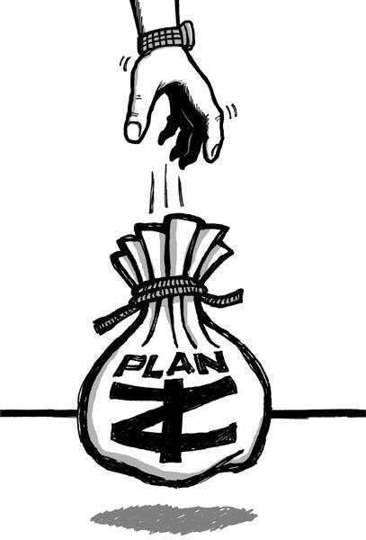

{% include JB/setup %}
{% raw %}
<div>

<h2 id="filepos58839" class="calibre19"><span class="calibre2"><a class="calibre13"></a><strong class="calibre14">Mission statement impossible</strong></span></h2><div class="calibre4"></div>
<p class="calibre7">There's a world of difference between truly standing for something and having a mission statement that <em class="italic1">says</em> you stand for something. You know, those "providing the best service" signs that are created just to be posted on a wall. The ones that sound phony and disconnected from reality.</p>
<p class="calibre17">Imagine you're standing in a rental-car office. The room's cold. The carpet is dirty. There's no one at the counter. And then you see a tattered piece of paper with some clip art at the top of it pinned to a bulletin board. It's a mission statement:</p>
<div class="calibre4"><blockquote class="calibre5"><span class="calibre6">
<p class="calibre7">Our mission is to fulfill the automotive and commercial truck rental, leasing, car sales and related needs of our customers and, in doing so, exceed their expectations for service, quality and value.</p>
<p class="calibre17">We will strive to earn our customers' long-term loyalty by working to deliver more than promised, being honest and fair and "going the extra mile" to provide exceptional personalized service that creates a pleasing business experience.</p>
<p class="calibre17">We must motivate our employees to provide exceptional service to our customers by supporting their development, providing opportunities for <a class="calibre16"></a>personal growth and fairly compensating them for their successes and achievements ... <a id="filepos60617" class="calibre16"></a><a href="Rework_split_027.html#filepos78136" class="calibre9"><sup class="calibre20"><span class="calibre6">*</span></sup></a></p>
</span></blockquote></div><div class="calibre4"></div>
<p class="calibre17">And it drones on. And you're sitting there reading this crap and wondering, "What kind of idiot do they take me for?" The words on the paper are clearly disconnected from the reality of the experience.</p>
<p class="calibre17">It's like when you're on hold and a recorded voice comes on telling you how much the company values you as a customer. Really? Then maybe you should hire some more support people so I don't have to wait thirty minutes to get help.</p>
<p class="calibre17">Or just say nothing. But don't give me an automated voice that's telling me how much you care about me. It's a robot. I know the difference between genuine affection and a robot that's programmed to say nice things.</p>
<p class="calibre17">Standing for something isn't just about writing it down. It's about believing it and living it.</p>
<p class="calibre3"><a class="calibre16"></a></p><div class="calibre4"></div>
</div>

{% endraw %}

